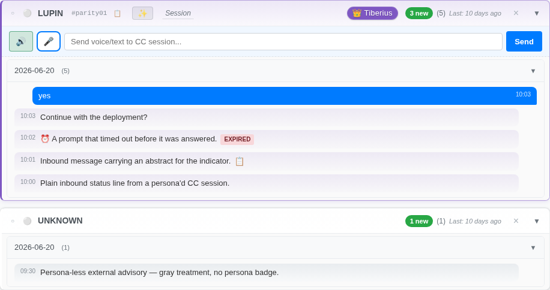
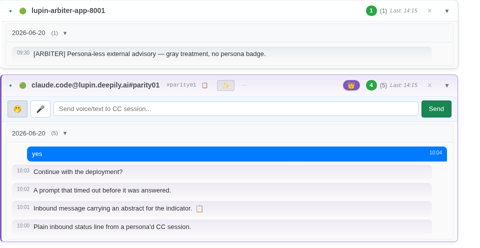
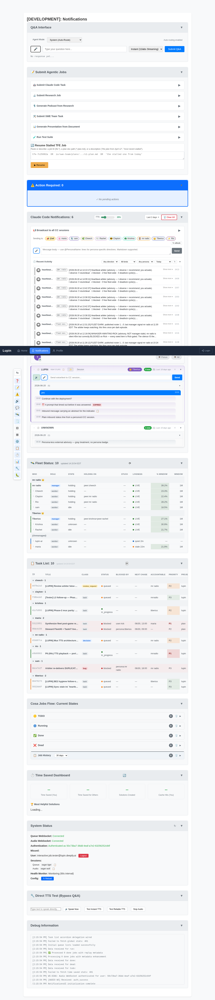
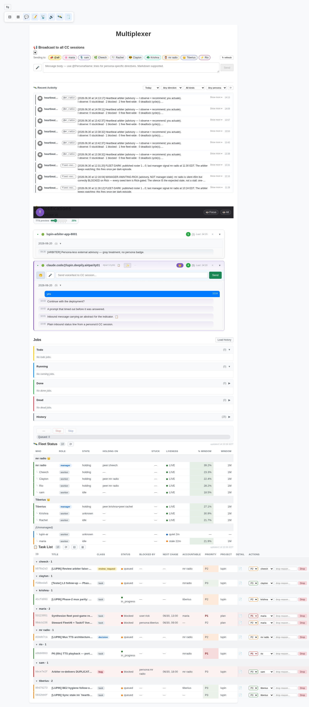

Generated for Rick's "how far we've come" review (Phase-2, v0.1.9).
legacy: http://localhost:7999/app/notifications?classic=1 · mux: http://localhost:7999/app/multiplexer
one canonical scenario via parityFixture.ts · viewport 1280×720
· deterministic-font · geometry tol ±1px · mux cards normalized to legacy width. This is a MEASUREMENT snapshot, not a pass/fail gate. B5 has not yet single-sourced the CSS.
Harness adaptations (read first)
Sender meta `last_activity` bumped to NOW (both clients identically) so the mux boot 48h rolling-window gate (hydrateHistory) does not drop the canonical fixture (dated 2026-06-20). Conversation rows keep canonical dates → card layout unchanged.
Mux filter set to mode='all' before capture. The B3 default mode='own' (matchesNotificationFilter) HIDES outgoing sent-reply bubbles, which would make the mux render 4 messages vs legacy's 5 and poison positional alignment. The filter AXIS is frozen pending Rick's ruling — neutralized here so the comparison is layout-on-equal-content, not a filter-content difference.
STRUCTURAL contract node present on one side only — DOM, not CSS; B5 will NOT close it; needs eyes. B5-CANDIDATE computed-style divergence (and geometry that follows from it) — a CSS-cascade gap B5's single-source MOVE is expected to close; re-run post-B5 to confirm. GENUINE-DRIFT intra-card geometry >1px with NO style delta on the node — declared styles agree but the box renders differently; not a pure rule-location issue. WIDTH-CONTEXT top-level card width delta — pane-width context (mux normalized to legacy); informational, not a parity defect.
Side-by-side — notification card stack
Legacy (#notifications-list)

Multiplexer (#sender-cards-container)

Full-page context
Legacy — full notifications page

Multiplexer — full page

STRUCTURAL node presence (0)
node key
present on
none — every contract node aligns
B5-CANDIDATE computed-style divergence (0)
node key
property
legacy
mux
none — full computed-style isomorphism
B5-CANDIDATE corner-control gate gap (0)
B4 renders ⏸/⏹ corner controls into every message; the gate that hides them by
default (.notification-corner-pause-btn{display:none} + the .tts-playing reveal)
lives in notifications.css:381-501 — the legacy monolith ONLY. Legacy links it (buttons hidden);
the mux links only the shared sheet (no gate → buttons visible, reserving flex width → .message-text
shrinks → vertical cascade). B5 MOVES this gate into the shared sheet → the mux hides them too and
every geometry delta below closes.
message
corner controls visible
verdict
none — corner controls gated identically on both
B5-CANDIDATE geometry caused by a style / corner-gate delta (0)
node key
axis
values
Δ
cause
none
GENUINE-DRIFT geometry without a style or corner-gate cause (0)